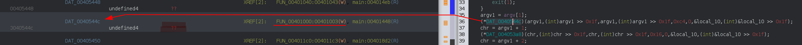
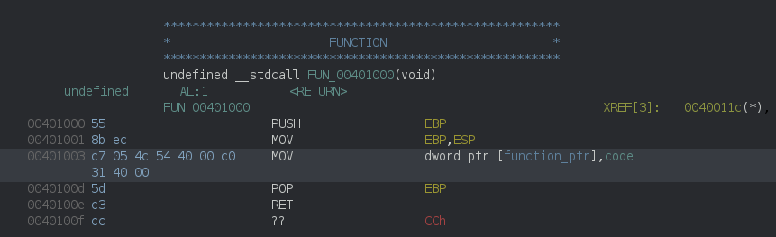
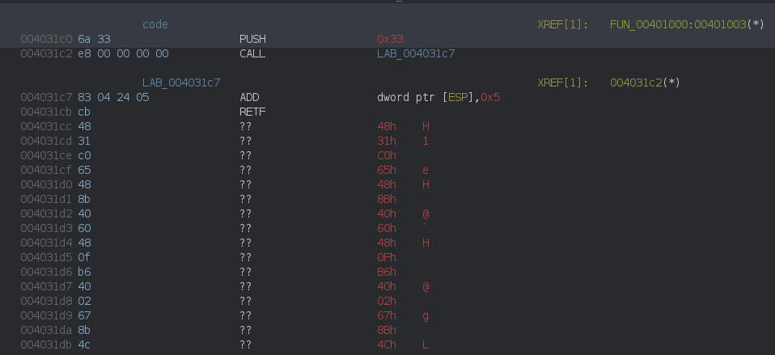
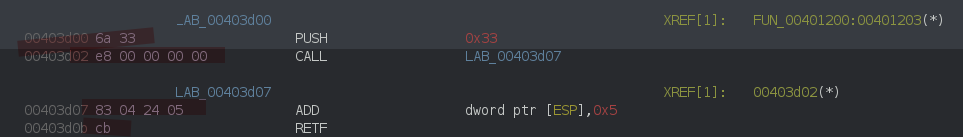

HITCON CTF 2022: Meow Way
This is a 32 bit PE file using an interesting trick.
You can grab the file here.
1. Quick Recon
Opening the file in ghidra and navigating from the entry point to the main function we find something like:
if (argc < 2) {
printf("Usage: %s <flag>\n",(char)*argv);
/* WARNING: Subroutine does not return */
exit(1);
}
f = argv[1];
argv1 = f + 1;
do {
cVar1 = *f;
f = f + 1;
} while (cVar1 != '\0');
if ((int)f - (int)argv1 != 48) {
printf("Wrong length\n",in_stack_ffffffd8);
/* WARNING: Subroutine does not return */
exit(1);
}
So we already know that we need to pass the flag as argument and that this flag must be 48 characters.
What follows is a serie of calls, checking the flag characters one by one:
argv1 = argv[1];
(*DAT_0040544c)(argv1,(int)argv1 >> 0x1f,argv1,(int)argv1 >> 0x1f,0xc4,0,&local_10,(int)&local_10 >> 0x1f);
chr = argv1 + 1;
(*DAT_004053a8)(chr,(int)chr >> 0x1f,chr,(int)chr >> 0x1f,0x16,0,&local_10,(int)&local_10 >> 0x1f);
chr = argv1 + 2;
(*DAT_004053b4)(chr,(int)chr >> 0x1f,chr,(int)chr >> 0x1f,0x8e,0,&local_10,(int)&local_10 >> 0x1f);
chr = argv1 + 3;
(*DAT_004053f0)(chr,(int)chr >> 0x1f,chr,(int)chr >> 0x1f,0x77,0,&local_10,(int)&local_10 >> 0x1f);
chr = argv1 + 4;
(*DAT_00405448)(chr,(int)chr >> 0x1f,chr,(int)chr >> 0x1f,5,0,&local_10,(int)&local_10 >> 0x1f);
chr = argv1 + 5;
(*DAT_004053fc)(chr,(int)chr >> 0x1f,chr,(int)chr >> 0x1f,0xb9,0,&local_10,(int)&local_10 >> 0x1f);
/*
cut for brevity
*/
chr = argv1 + 0x2d;
(*DAT_0040540c)(chr,(int)chr >> 0x1f,chr,(int)chr >> 0x1f,0xf9,0,&local_10,(int)&local_10 >> 0x1f);
chr = argv1 + 0x2e;
(*DAT_004053f4)(chr,(int)chr >> 0x1f,chr,(int)chr >> 0x1f,0x98,0,&local_10,(int)&local_10 >> 0x1f);
argv1 = argv1 + 0x2f;
(*DAT_00405438)(argv1,(int)argv1 >> 0x1f,argv1,(int)argv1 >> 0x1f,0x65,0,&local_10,(int)&local_10 >> 0x1f);
Finally a memcmp call against a global array:
iVar2 = memcmp(FLAG,argv[1],0x30);
if (iVar2 != 0) {
printf("Wrong\n",(char)iVar2);
/* WARNING: Subroutine does not return */
exit(-1);
}
printf("I know you know the flag!\n",(char)iVar2);
The content of this array is, we can already save it for later:
FLAG XREF[1]: main:00401c05(*)
00405018 96 50 cf 2c eb 9b aa db[48]
fb 53 ab 73 dd 6c 9e
db bc ee ab 23 d6 1
00405018 [0] 96h, 50h, CFh, 2Ch,
0040501c [4] EBh, 9Bh, AAh, FBh,
00405020 [8] 53h, ABh, 73h, DDh,
00405024 [12] 6Ch, 9Eh, DBh, BCh,
00405028 [16] EEh, ABh, 23h, D6h,
0040502c [20] 16h, FDh, F1h, F0h,
00405030 [24] B9h, 75h, C3h, 28h,
00405034 [28] A2h, 74h, 7Dh, E3h,
00405038 [32] 27h, D5h, 95h, 5Ch,
0040503c [36] F5h, 76h, 75h, C9h,
00405040 [40] 8Ch, FBh, 42h, Eh,
00405044 [44] BDh, 51h, A2h, 98h
So we know what we need to find, we just have to reverse all the flag character check functions.
Each check is actually a call to a different function pointer and these pointers are initialized at runtime:

If we follow the XREF, we see that each of them are resolved by a serie of stub functions
DAT_004030cc XREF[1]: entry:00401d92(*)
004030cc 00 ?? 00h
004030cd 00 ?? 00h
004030ce 00 ?? 00h
004030cf 00 ?? 00h
004030d0 0e 1d 40 00 addr LAB_00401d0e
004030d4 00 10 40 00 addr FUN_00401000
004030d8 10 10 40 00 addr FUN_00401010
004030dc 20 10 40 00 addr FUN_00401020
004030e0 30 10 40 00 addr FUN_00401030
004030e4 40 10 40 00 addr FUN_00401040
004030e8 50 10 40 00 addr FUN_00401050
004030ec 60 10 40 00 addr FUN_00401060
004030f0 70 10 40 00 addr FUN_00401070
004030f4 80 10 40 00 addr FUN_00401080
004030f8 90 10 40 00 addr FUN_00401090
004030fc a0 10 40 00 addr FUN_004010a0
00403100 b0 10 40 00 addr FUN_004010b0
00403104 c0 10 40 00 addr FUN_004010c0
00403108 d0 10 40 00 addr FUN_004010d0
0040310c e0 10 40 00 addr FUN_004010e0
00403110 f0 10 40 00 addr FUN_004010f0
00403114 00 11 40 00 addr FUN_00401100
00403118 10 11 40 00 addr FUN_00401110
0040311c 20 11 40 00 addr FUN_00401120
00403120 30 11 40 00 addr FUN_00401130
00403124 40 11 40 00 addr FUN_00401140
00403128 50 11 40 00 addr FUN_00401150
0040312c 60 11 40 00 addr FUN_00401160
00403130 70 11 40 00 addr FUN_00401170
00403134 80 11 40 00 addr FUN_00401180
00403138 90 11 40 00 addr FUN_00401190
0040313c a0 11 40 00 addr FUN_004011a0
00403140 b0 11 40 00 addr FUN_004011b0
00403144 c0 11 40 00 addr FUN_004011c0
00403148 d0 11 40 00 addr FUN_004011d0
0040314c e0 11 40 00 addr FUN_004011e0
00403150 f0 11 40 00 addr FUN_004011f0
00403154 00 12 40 00 addr FUN_00401200
00403158 10 12 40 00 addr FUN_00401210
0040315c 20 12 40 00 addr FUN_00401220
00403160 30 12 40 00 addr FUN_00401230
00403164 40 12 40 00 addr FUN_00401240
00403168 50 12 40 00 addr FUN_00401250
0040316c 60 12 40 00 addr FUN_00401260
00403170 70 12 40 00 addr FUN_00401270
00403174 80 12 40 00 addr FUN_00401280
00403178 90 12 40 00 addr FUN_00401290
0040317c a0 12 40 00 addr FUN_004012a0
00403180 b0 12 40 00 addr FUN_004012b0
00403184 c0 12 40 00 addr FUN_004012c0
00403188 d0 12 40 00 addr FUN_004012d0
0040318c e0 12 40 00 addr FUN_004012e0
00403190 f0 12 40 00 addr FUN_004012f0
during the _initterm() call before the main invocation
00401d92 68 cc 30 40 00 PUSH DAT_004030cc
00401d97 e8 57 0a 00 00 CALL API-MS-WIN-CRT-RUNTIME-L1-1-0.DLL::_initterm undefined _initterm()
2. The Magic
Eeach stub looks the same, only initializing a different pointer with a different address:

we can follow code and force disassembly to find something like:

and this where the magic happen: the RETFinstruction (RET FAR), will not only pop the EIP register but also the CS register.
004031c0 PUSH 0x33 ; push 0x33 to the stack
004031c2 CALL LAB_004031c7 ; push return address to the stack (right after the call: 004031c7)
LAB_004031c7:
004031c7 ADD [ESP], 5 ; increment saved return address by 5 (ADD is 4 bytes, RETF 1 bytes)
; saved EIP is now 004031cc
004031cb RETF ; pop EIP from the stack (so EIP = 004031cc) and CS (0x33)
; continues execution
004031cc ??
By putting 0x33 into CS, the processor switches to 64 bits mode, that’s why ghidra is getting all confused after the RETF.
we can quickly disassemble the bytes using radare2 or rizin:
; % rz-asm -b 64 -d 4831c065488b4060480fb64002678b4c241c67890185c07518678b7c2404678b74240c678b4c241467020e80f1ba67880fe800000000c7442404230000008304240dcbc3
xor rax, rax
mov rax, qword gs:[rax + 0x60]
movzx rax, byte [rax + 2]
mov ecx, dword [esp + 0x1c]
mov dword [ecx], eax
test eax, eax
jne 0x31
mov edi, dword [esp + 4]
mov esi, dword [esp + 0xc]
mov ecx, dword [esp + 0x14]
add cl, byte [esi]
xor cl, 0xba
mov byte [edi], cl
call 0x36
mov dword [rsp + 4], 0x23
add dword [rsp], 0xd
retf
ret
this piece of code starts with some anti debug:
xor rax, rax
mov rax, qword gs:[rax + 0x60] ; PEB
movzx rax, byte [rax + 2] ; PEB->BeingDebugged
mov ecx, dword [esp + 0x1c]
mov dword [ecx], eax
test eax, eax
jne 0x31
It check PEB->BeingDebugged for the presence of a debugger and skips the rest if found.
More info on the TEB/PEB here:
- https://www.geoffchappell.com/studies/windows/km/ntoskrnl/inc/api/pebteb/teb/index.htm
- https://www.geoffchappell.com/studies/windows/km/ntoskrnl/inc/api/pebteb/peb/index.htm
Then it manipulates the flag character it’s checking:
mov edi, dword [esp + 4] ; ptr to the character we're checking in argv[1]
mov esi, dword [esp + 0xc] ; same as above
mov ecx, dword [esp + 0x14] ; ptr to some constant passed during the call - let's call the value V
add cl, byte [esi]
xor cl, 0xba
mov byte [edi], cl
The stack layout was dumped using a debugger before the CPU switches to 64 bits mode (and makes the debugger go banana), and this piece of code is doing:
argv[1][0] = (argv[1][0] + V) ^ 0xba
we can get the value V (0xc4 in this case) from the function call in main:
argv1 = argv[1];
(*function_ptr)(argv1 , (int)argv1 >> 0x1f , argv1 , (int)argv1 >> 0x1f, 0xc4 ,0,&local_10,(int)&local_10 >> 0x1f);
-----> V
ESP +4 , +8 , +0xc , +0x10 , +0x14 , .....
The last bit of code is responsible for switching back to 32 bits mode, this time by setting CS to 0x23:
call 0x36
mov dword [rsp + 4], 0x23
add dword [rsp], 0xd
retf
Alright so here we know that:
argv[1][0] = (argv[1][0] + 0xc4) ^ 0xba
and that is should be equal to 0x96 (first byte of the memcmp’d array)
which means the firt character of the flag must be h (even though we already know that because flags are like hitcon{….}):
>>> chr((0x96 ^ 0xba) - 0xc4 & 0xff)
'h'
At least the track seems solid…
3. Rinse and Repeat
48 characters, 48 different functions, time to go dirty.
I’ve noticed 2 interesting properties:
- the flag char check functions are in the correct “memory order” (meaning that the function checking chr 2 is at a higher address than the one checking chr 1, and the one checking chr 3 is at a higher address than the one checking chr 2, etc..)
- these functions always start/end with the same byte sequence
which make a good and simple “automation” case.
The start byte sequence is \x6a\x33\xe8\x00\x00\x00\x00\x83\x04\x24\x05\xcb, the end byte sequence is \xcb\x3c (RETF; RET)

using the following script we can disassemble all the functions we need:
from capstone import *
def disasm(code):
md = Cs(CS_ARCH_X86, CS_MODE_64)
for i in md.disasm(code, 0x1000):
print("0x%x:\t%s\t%s" %(i.address, i.mnemonic, i.op_str))
dat = open('meow_way.exe', 'rb').read()
for x in dat.split(b"\x6a\x33\xe8\x00\x00\x00\x00\x83\x04\x24\x05\xcb"):
if x.startswith(b'H1'):
print("#############################")
disasm(x.split(b'\xcb\xc3')[0])
and we can notice that some of these functions are not adding the value, but substracting:
% python disasm64.py| more
[....]
#############################
0x1000: xor rax, rax
0x1003: mov rax, qword ptr gs:[rax + 0x60]
0x1008: movzx rax, byte ptr [rax + 2]
0x100d: mov ecx, dword ptr [esp + 0x1c]
0x1012: mov dword ptr [ecx], eax
0x1015: test eax, eax
0x1017: jne 0x1031
0x1019: mov edi, dword ptr [esp + 4]
0x101e: mov esi, dword ptr [esp + 0xc]
0x1023: mov ecx, dword ptr [esp + 0x14]
0x1028: add cl, byte ptr [esi] <-- ADD
0x102b: xor cl, 0x9f
0x102e: mov byte ptr [edi], cl
0x1031: call 0x1036
0x1036: mov dword ptr [rsp + 4], 0x23
0x103e: add dword ptr [rsp], 0xd
#############################
0x1000: xor rax, rax
0x1003: mov rax, qword ptr gs:[rax + 0x60]
0x1008: movzx rax, byte ptr [rax + 2]
0x100d: mov ecx, dword ptr [esp + 0x1c]
0x1012: mov dword ptr [ecx], eax
0x1015: test eax, eax
0x1017: jne 0x1031
0x1019: mov edi, dword ptr [esp + 4]
0x101e: mov esi, dword ptr [esp + 0xc]
0x1023: mov ecx, dword ptr [esp + 0x14]
0x1028: sub cl, byte ptr [esi] <--- SUB
0x102b: xor cl, 0xd0
0x102e: mov byte ptr [edi], cl
0x1031: call 0x1036
0x1036: mov dword ptr [rsp + 4], 0x23
0x103e: add dword ptr [rsp], 0xd
[...]
At this point we know all the information we need to get in order to find the flag:
- the memcmp array it’s checked against
- the XOR value hardcoded in each function
- the operation performed by each function (SUB or ADD)
- the value parameter passed to the functions
3.1 The memcmp array
easy, it’s in the code:
[ 0x96, 0x50, 0xcf, 0x2c, 0xeb, 0x9b, 0xaa, 0xfb, 0x53, 0xab, 0x73, 0xdd, 0x6c, 0x9e, 0xdb, 0xbc, 0xee, 0xab, 0x23, 0xd6, 0x16, 0xfd, 0xf1, 0xf0, 0xb9, 0x75, 0xc3, 0x28, 0xa2, 0x74, 0x7d,
0xe3, 0x27, 0xd5, 0x95, 0x5c, 0xf5, 0x76, 0x75, 0xc9, 0x8c, 0xfb, 0x42, 0x0e, 0xbd, 0x51, 0xa2, 0x98 ]
3.2 The XOR values
just grep them:
% python disasm64.py | egrep "xor.*cl" | cut -d, -f2 | xargs | tr " " ","
0xba,0x2f,0xcd,0xf6,0x9f,0xd0,0x22,0xf7,0xd0,0x1f,0xa8,0x3d,0xc7,0xa5,0x47,0x68,0xd7,0x4a,0x96,0x91,0x2e,0x19,0xc5,0xe3,0x88,0xbd,0x4e,0x93,0x13,0xf1,0xcc,0x47,0xab,0xc9,0x48,0x2b,9,0x50,0x4f,0xe9,0xc0,0x5e,0xef,0x8b,0x85,0xcb,0x55,0x70
3.3 The operations
grep them too:
% python disasm64.py| egrep "(add|sub).*cl" | cat -n | grep sub | awk '{ print $1-1}' | xargs | tr " " ","
5,7,10,11,14,17,19,25,28,29,34,35,37,39,40,42,43,44,45,47
for character 5, 7, 10, … it’s doing a sub, for the others, an add.
3.4 The parameter values.
Just copy the ghidra decompiler output of the main function to a file:
% cat bla.txt
(*DAT_0040544c)(argv1,(int)argv1 >> 0x1f,argv1,(int)argv1 >> 0x1f,0xc4,0,&local_10,(int)&local_10 >> 0x1f);
chr = argv1 + 1;
(*DAT_004053a8)(chr,(int)chr >> 0x1f,chr,(int)chr >> 0x1f,0x16,0,&local_10,(int)&local_10 >> 0x1f);
chr = argv1 + 2;
(*DAT_004053b4)(chr,(int)chr >> 0x1f,chr,(int)chr >> 0x1f,0x8e,0,&local_10,(int)&local_10 >> 0x1f);
chr = argv1 + 3;
(*DAT_004053f0)(chr,(int)chr >> 0x1f,chr,(int)chr >> 0x1f,0x77,0,&local_10,(int)&local_10 >> 0x1f);
// etc....
and get the values:
% cat bla.txt| grep DAT | cut -d, -f 5 | xargs | tr " " ","
0xc4,0x16,0x8e,0x77,5,0xb9,0xd,0x6b,0x24,0x55,0x12,0x35,0x76,0xe7,0xfb,0xa0,0xda,0x34,0x84,0xb4,200,0x9b,0xef,0xb4,0xb9,10,0x57,0x5c,0xfe,0xc5,0x6a,0x73,0x49,0xbd,0x11,0xd6,0x8f,0x6b,10,0x97,0xab,0x4e,0xed,0xfe,0x97,0xf9,0x98
4. The solution
Put all these arrays in a python script and watch the flag:
# xor values
x = [0xba,0x2f,0xcd,0xf6,0x9f,0xd0,0x22,0xf7,0xd0,0x1f,0xa8,0x3d,0xc7,0xa5,0x47,0x68,0xd7,0x4a,0x96,0x91,0x2e,0x19,0xc5,0xe3,0x88,0xbd,0x4e,0x93,0x13,0xf1,0xcc,0x47,0xab,0xc9,0x48,0x2b,9,0x50,0x4f,0xe9,0xc0,0x5e,0xef,0x8b,0x85,0xcb,0x55,0x70]
# parameters values
param = [0xc4,0x16,0x8e,0x77,5,0xb9,0xd,0x6b,0x24,0x55,0x12,0x35,0x76,0xe7,0xfb,0xa0,0xda,0x34,0x84,0xb4,200,0x9b,0xef,0xb4,0xb9,10,0x57,0x5c,0xfe,0xc5,0x6a,0x73,0x49,0xbd,0x11,0xd6,0x8f,0x6b,10,0x97,0xab,0x4e,0xed,0xfe,0x97,0xf9,0x98,0x65]
# memcmp
memcmp = [0x96,0x50,0xcf,0x2c,0xeb,0x9b,0xaa,0xfb,0x53,0xab,0x73,0xdd,0x6c,0x9e,0xdb,0xbc,0xee,0xab,0x23,0xd6,0x16,0xfd,0xf1,0xf0,0xb9,0x75,0xc3,0x28,0xa2,0x74,0x7d,0xe3,0x27,0xd5,0x95,0x5c,0xf5,0x76,0x75,0xc9,0x8c,0xfb,0x42,0x0e,0xbd,0x51,0xa2,0x98]
# index of 'sub' functions
subs = [5,7,10,11,14,17,19,25,28,29,34,35,37,39,40,42,43,44,45,47]
f = ''
for i in range(48):
if i in subs:
p = param[i] - ((memcmp[i] ^ x[i])) & 0xff
else:
p = ((memcmp[i] ^ x[i]) - param[i]) & 0xff
f += chr(p)
print(f)
-> hitcon{___7U5T_4_S1mpIE_xB6_M@G1C_4_mE0w_W@y___}
5. Bonus
Some of the check functions have an alternative anti-debug check:
xor rax, rax
mov rax, qword gs:[rax + 0x60] ; PEB
movzx rax, byte [rax + 0xbc] ; PEB->NtGlobalFlag
mov ecx, dword [esp + 0x1c]
and eax, 0x70 ; FLG_HEAP_ENABLE_TAIL_CHECK|FLG_HEAP_ENABLE_FREE_CHECK|FLG_HEAP_VALIDATE_PARAMETERS
mov dword [ecx], eax
test eax, eax
jne 0x37
it tests PEB->NtGlobalFlag & 0x70 to check for the presence of a debugger (more info here: https://www.aldeid.com/wiki/PEB-Process-Environment-Block/NtGlobalFlag)